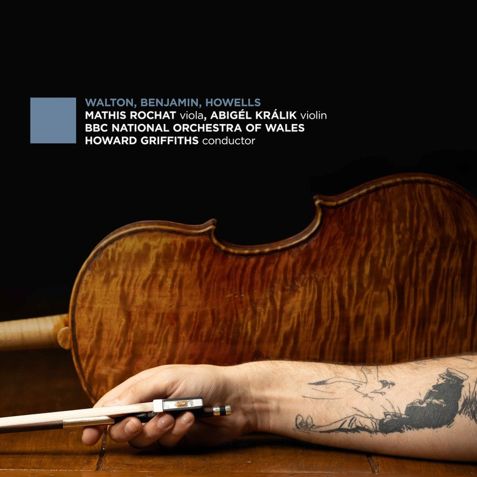

Hans Gál · Op. 15
Die Heilige
Ente
Heidelberg
Unreleased recording
The listening room
Settle in & listen
Your next recording
These are large audio files. If Google Drive says a file is too large to scan for viruses, choose Download anyway to save it. If playback is unavailable here, use Open in Drive or download the WAV for local listening.